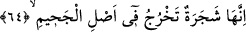
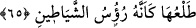

malum olan rızık, yiyecek olarak daha hayırlıdır, daha iyidir. Yani malum rızık, cennet
ehlinin nüzul ve yiyeceğidir. Cehennem ehlinin nüzul, ikram ve yiyeceği ise zakkum
ağacıdır yani meyvesidir. Peki nüzul, ikram ve yiyecek olarak bunların hangisi daha
iyidir? Burada cennet ehlinin ikram ve yiyeceğinin “nüzul” olarak adlandırılması, Allah
Teâlâ’nın cennet ehli için zikretmiş olduğu nimetlerin misafir için ivedilikle hazırlanıp
takdim edilen ikram mesabesinde olduğuna delâlet etmektedir. Cennet ehli için bunların
ötesinde akıl, idrak ve havsalaların ulaşamayacağı nice nimet ve ikramlar vardır.
Cehennem ehli için olan zakkum da aynıdır. Denilir ki nüzul kelimesi aslında fazlalık,
ziyâde mahsul ve artış demektir. Arapların “Bal, yer mahsulü değildir,” demeleri bu
kabildendir. Nüzul kelimesi bir şeyden hâsıl olan ürüne mecâzen ad olarak
kullanılmıştır. Bu durumda nüzul kelimesi temyiz olarak mensuptur. Mânâ: Mahsûlü
lezzet, sevinç ve mutluluk olan bu mâlum rızık mı hayırlıdır yoksa mahsûlü elem,
ızdırap, gam ve tasa olan zakkum mu? demektir.
“Biz onu (zakkumu) zâlimler için bir fitne” ahirette mihnet ve azap “kıldık.” Lügatta
“fitne” yakmak demektir. Hak yoldan saptırana da bazen “fâtin” denilir. Zira kâfirler
cehennemdeki bu zakkum ağacını işitince bu sebeple dinlerinden saptılar ve bunu
Kur’an’a ve nübüvvete sataşmaya ve küfürde ısrar etmeye vesile kıldılar. Ve “Bu nasıl
mümkün olur? Ateş ağacı yakar!” dediler. Ateşte yaşayıp ondan lezzet alan bir canlıyı
yaratmaya kadir olan Allah Teâlâ’nın cehennemde bir ağaç yaratıp onu orada yanmaktan
korumaya daha kadir olduğunu bilemediler.
64. Zira o, cehennemin dibinde bitip yetişen bir ağaçtır.
Zakkum ağacının asıl unsurları ateş olduğu için diğer ağaçlar gibi ateş onu yakmaz.
İşte balık da suda ürediği için suda boğulmaz. Suda üremeyen canlılar ise böyle
değildir. Bu kavl-i ilâhî Ali b. Zeb’ari ve Kureyş’in ileri gelenlerine bir reddiye olup
onların cehaletini ortaya koyar. Zira Ali b. Zeb’ari Kureyş’in ileri gelenlerine:
“Muhammed (s.a.) bizi zakkumla tehdit ediyor; halbuki berberi dilinde “zakkum”
kaymaklı hurma demektir” dedi. Ebû Cehil bu adamı alıp evine götürdü ve cariyesine:
“Bize zakkum getir” dedi. Cariye onlara gerçekten kaymaklı hurma getirdi. Bu sefer
alaylı bir ifade ile “Zakkumlanın, zakkum yiyin, işte Muhammed’in (s.a.) sizi tehdit
ettiği zakkum budur,” dedi. Nitekim Allah Teâlâ da: “Zira o, cehennemin dibinde bitip
yetişen bir ağaçtır” buyurdu. İşte zakkum budur; yoksa bu sapık ve cahillerin anladığı
şey değildir.